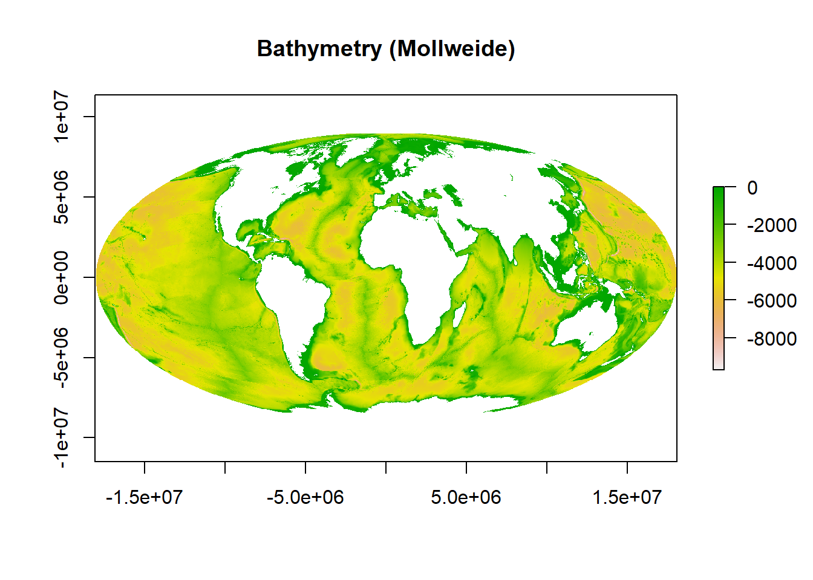
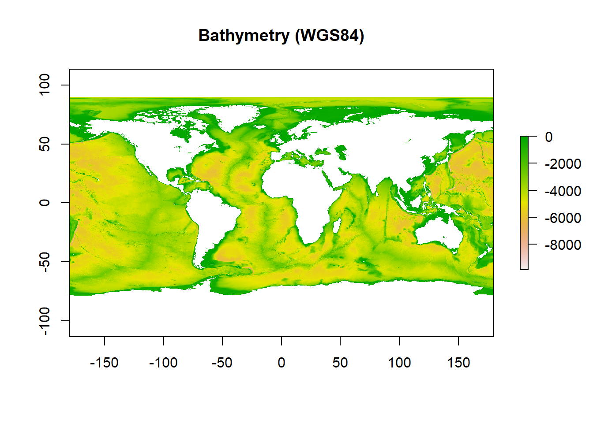
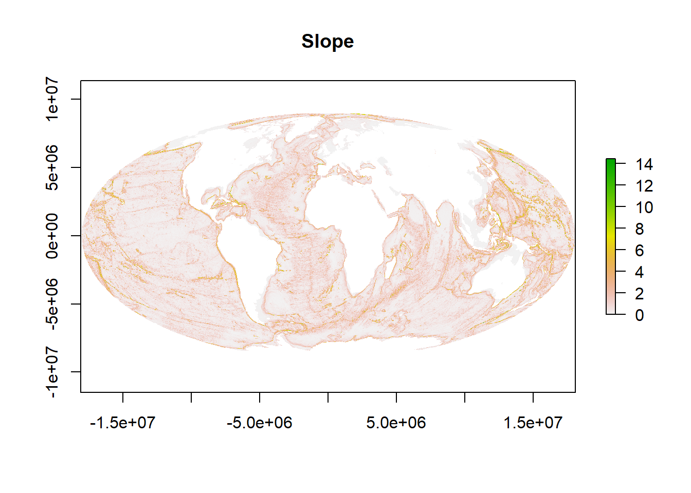
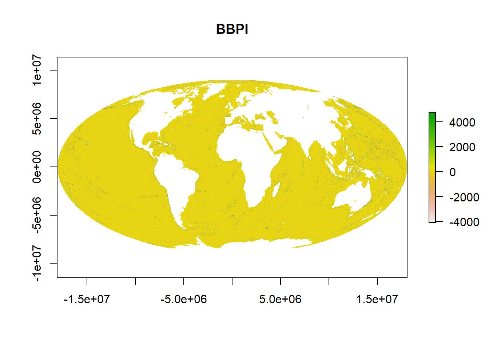
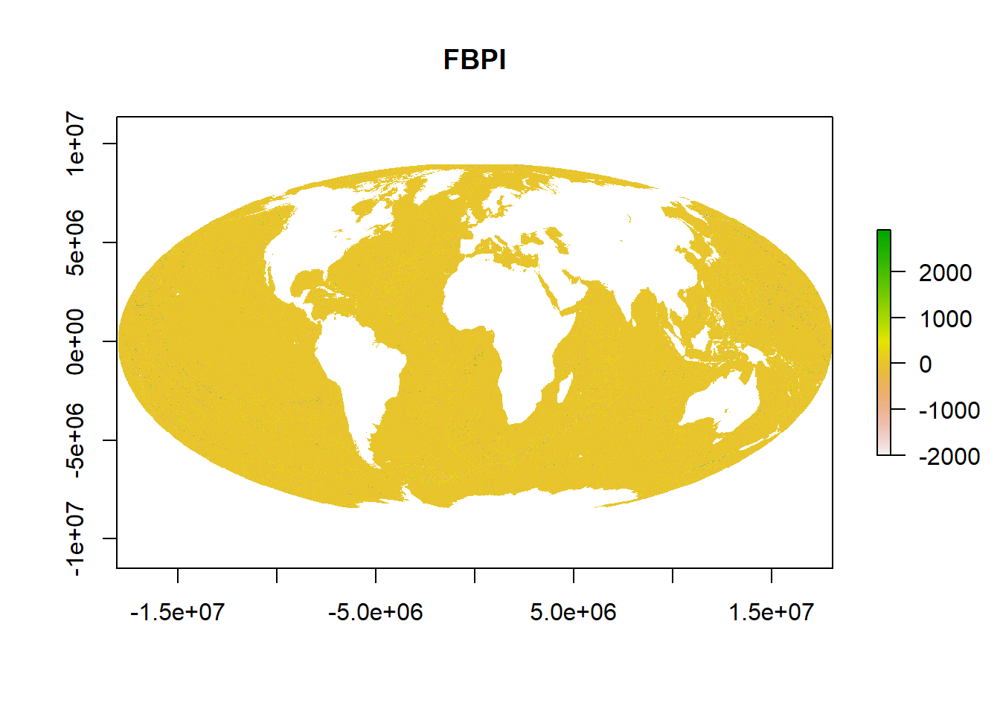
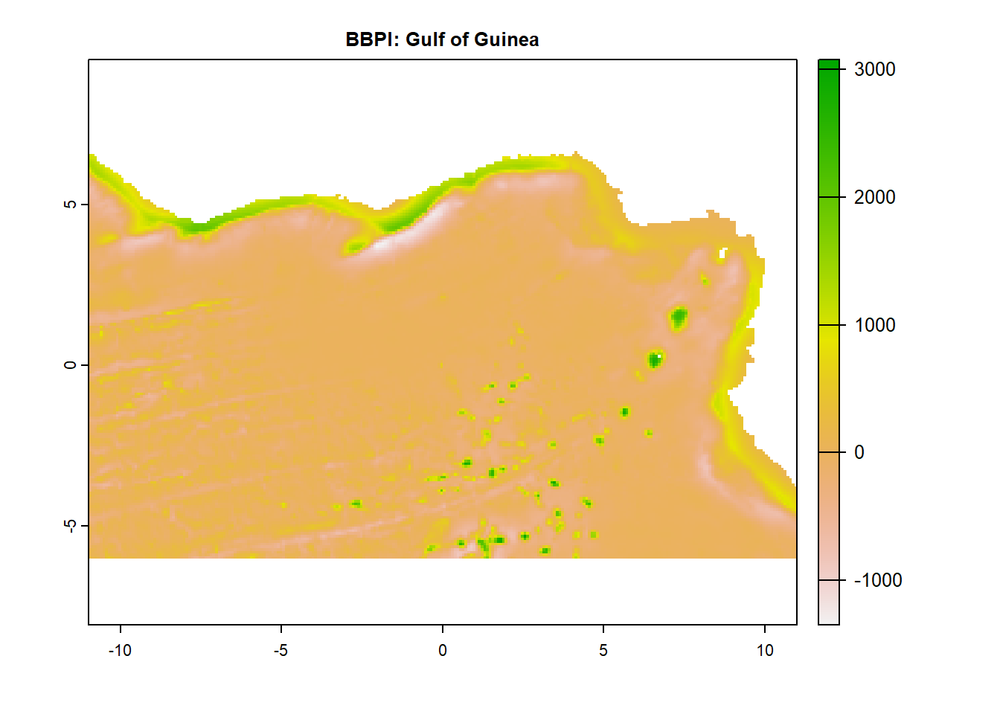
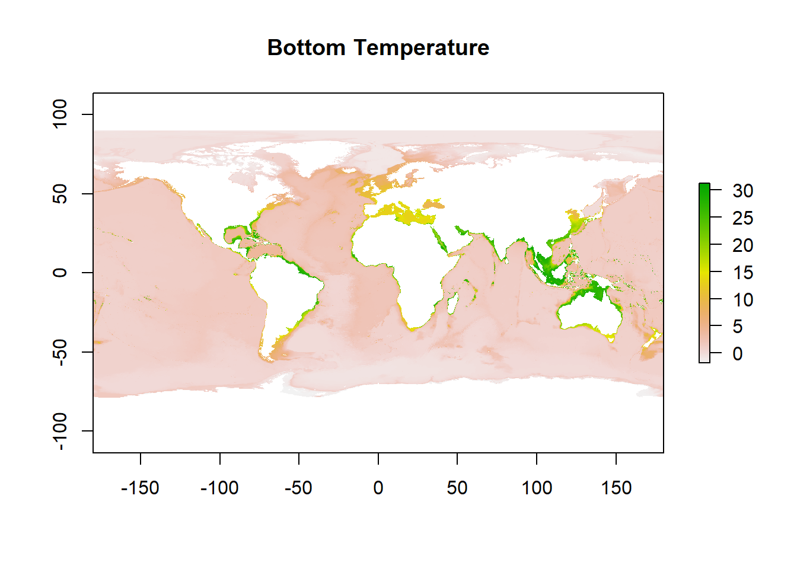
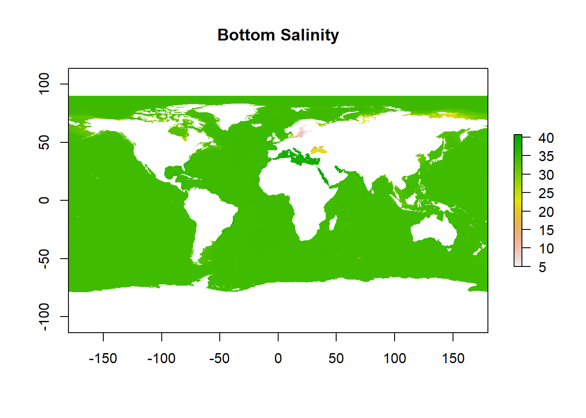

A guide to developing non-hierarchical habitat classifications using open-source data and software: Accessing the data
An introduction to this document
[Blurb on method, examples of use] [How to use this document]
Prepare your folder structure & working environment
[Blurb on packages]
[Blurb on importance of folder structure]
Your working directory (wd) should be the folder you’ve downloaded from this GitHub repository where the .Rproj file is located.
wd<-getwd()
wd[1] "D:/OneDrive/OneDrive - University of Plymouth/In_prep_submittted_manuscripts/Howell_etal_Global_HC/Non-hierarchical_habitat_classification"You’ll notice there are other subfolders so for ease, let’s create paths to them too.
input_layers_folder<-paste0(wd, "/InputLayers")
output_layers_folder<-paste0(wd, "/OutputLayers")
results_layers_folder<-paste0(wd, "/Results")my_plot_theme <- function(...){
ggplot2::theme_light()+
ggplot2::theme(axis.line = ggplot2::element_line(colour = "grey50"),
axis.title.y = ggplot2::element_text(face="bold", angle=90),
axis.title.x = ggplot2::element_text(face="bold"),
panel.border = element_rect(colour = "black", fill=NA, linewidth=1),
plot.title = ggplot2::element_text(size=14,hjust=0.5),
legend.text.align = 0.5,
legend.title.align = 0,
axis.title = ggplot2::element_text(size=14,vjust=0.5),
axis.text.x = ggplot2::element_text(size = 12,
colour = "black"),
axis.text.y = ggplot2::element_text(colour = "black",
size = 12),
...)
}Read in the data
Topography
In McQuaid et al. (2023), we used three topographic variables to create our ‘topography layer’ - these were slope, fine-scale bathymetric position index (FBPI) and broad-scale (BBPI). These variables are derivatives of bathymetry (i.e. they can be calculated from bathymetry).
bathy<-raster(paste0(input_layers_folder, "/GEBCO2020_Depth_10km_WGS84.tif"))You’ll notice that the rasters I’m bringing in are named in similar ways. I use a naming convention that ensures I know the source (the GEBCO 2020 grid), variable (depth), resolution (10km) and projection (WGS84), without having to open the file. When working in R, calling the object (in this case ‘bathy’) also allows us to quickly look at the details including what coordinate reference system (crs) it’s in.
bathyclass : RasterLayer
dimensions : 2161, 4320, 9335520 (nrow, ncol, ncell)
resolution : 0.08333333, 0.08333333 (x, y)
extent : -180, 180, -90, 90.08333 (xmin, xmax, ymin, ymax)
crs : +proj=longlat +datum=WGS84 +no_defs
source : GEBCO2020_Depth_10km_WGS84.tif
names : GEBCO2020_Depth_10km_WGS84
values : -10848, 0 (min, max)As per the above, our bathymetry raster is in WGS84. To calculate the bathymetric derivatives we want, we need our bathymetry in an equal-area projection where all cells on the grid are the same size.
There are hundreds of equal-area projections to choose from but we’re going to use Mollweide - this page explains it’s limitations and advantages nicely. The crs for Mollweide is ‘+proj=moll +lon_0=0 +x_0=0 +y_0=0 +datum=WGS84’.
newproj<-"+proj=moll +lon_0=0 +x_0=0 +y_0=0 +datum=WGS84"
bathy_MOL<-projectRaster(bathy, crs=newproj, res=c(10000,10000))
plot(bathy_MOL, main="Bathymetry (Mollweide)")
You can see from the map that this is in the Mollweide projection as opposed to the WGS84 version below.
plot(bathy, main="Bathymetry (WGS84)")
Now we have out bathymetry data read in and in the correct projection, we need to calculate slope, FBPI and BBPI and we do this using the MultiscaleDTM package described in Ilich et al. (2023).
Slope
[Blurb on slope]
slo<-SlpAsp(bathy_MOL, w=c(3,3), unit="degrees", method="queen", metrics="slope")
sloclass : RasterLayer
dimensions : 1802, 3618, 6519636 (nrow, ncol, ncell)
resolution : 10000, 10000 (x, y)
extent : -18089740, 18090260, -9073049, 8946951 (xmin, xmax, ymin, ymax)
crs : +proj=moll +lon_0=0 +x_0=0 +y_0=0 +datum=WGS84 +units=m +no_defs
source : memory
names : slope
values : 0, 18.44445 (min, max)R is brilliant for quickly automating tasks, but it’s still really important for us to ‘eyeball’ our data and ensure the input variables look correct. This is where expert opinion and knowing your study area is crucial.
plot(slo, main="Slope")
These values and the plot look as one would expect for a global slope map, with large ridge systems identified as well as flat abyssal plains. Let’s save the output.
terra::writeRaster(slo, filename=(paste0(input_layers_folder, "/GEBCO2020_Slo_10km_MOL.tif")), overwrite=TRUE, format="GTiff")Broad-scale bathymetri position index (BBPI)
[Blurb on BBPI and radii]
specs<-annulus_window(c(1,10), "cell")
bbpi<-MultiscaleDTM::BPI(bathy_MOL, w = specs, unit = "cell", na.rm = TRUE)
bbpiclass : RasterLayer
dimensions : 1802, 3618, 6519636 (nrow, ncol, ncell)
resolution : 10000, 10000 (x, y)
extent : -18089740, 18090260, -9073049, 8946951 (xmin, xmax, ymin, ymax)
crs : +proj=moll +lon_0=0 +x_0=0 +y_0=0 +datum=WGS84 +units=m +no_defs
source : memory
names : bpi
values : -4455.167, 5074.362 (min, max)The values look sensible.
plot(bbpi, main="BBPI")
And so does the plot so we’ll save the layer.
terra::writeRaster(bbpi, filename=(paste0(input_layers_folder, "/GEBCO2020_BBPI_10km_MOL.tif")), overwrite=TRUE, format="GTiff")Fine-scale bathymetric position index (FBPI)
[Blurb on FBPI and why we chose these radii]
specs<-annulus_window(c(1,2), "cell")
fbpi<-MultiscaleDTM::BPI(bathy_MOL, w = specs, unit = "cell", na.rm = TRUE)
fbpiclass : RasterLayer
dimensions : 1802, 3618, 6519636 (nrow, ncol, ncell)
resolution : 10000, 10000 (x, y)
extent : -18089740, 18090260, -9073049, 8946951 (xmin, xmax, ymin, ymax)
crs : +proj=moll +lon_0=0 +x_0=0 +y_0=0 +datum=WGS84 +units=m +no_defs
source : memory
names : bpi
values : -3248.836, 3691.62 (min, max)The values look sensible.
plot(fbpi, main="FBPI")
And so does the plot so we’ll save the layer.
terra::writeRaster(fbpi, filename=(paste0(input_layers_folder, "/GEBCO2020_FBPI_10km_MOL.tif")), overwrite=TRUE, format="GTiff")Productivity
The productivity (particulate organic carbon (POC) flux to depth) layer we’re using comes from the NEMO-MEDUSA model. Authors have uploaded the netCDF version on Zenodo, here. However for ease, the TIFF version is in the ‘InputLayers’ folder of this repo. Let’s read it in.
prod<-raster(paste0(input_layers_folder, "/Yool_POC_10km_WGS84.tif"))
plot(prod, main="POC flux to depth")
Again, here you can see that (as expected) continental shelves have higher productivity and you can see the slight increases in productivity in temperate latitudes.
Water mass structure
[Blurb on data repositories, example links etc.]
sdm_datasets<-sdmpredictors::list_datasets(terrestrial = FALSE, marine = TRUE)
layers<-sdmpredictors::list_layers(sdm_datasets)%>%
filter(str_detect(layer_url, 'Present.Benthic.Mean.Depth'))%>%
filter(primary_spatial_resolution=="0.25 arcdegree")%>%
filter(version==22)These are the 66 layers available from Bio-ORACLE (version 2.2) for which the values refer to present benthic conditions taken at the mean depth of each cell at a 0.25 arc degree resolution.
We want to download the latest version (BO22) of mean temperature and salinity (tempmean/salinitymean) for the mean bottom depth (bdmean).
Temperature
temp<-load_layers("BO22_tempmean_bdmean", equalarea=FALSE)
tempclass : RasterStack
dimensions : 2160, 4320, 9331200, 1 (nrow, ncol, ncell, nlayers)
resolution : 0.08333333, 0.08333333 (x, y)
extent : -180, 180, -90, 90 (xmin, xmax, ymin, ymax)
crs : +proj=longlat +datum=WGS84 +no_defs
names : BO22_tempmean_bdmean
min values : -1.839894
max values : 31.4447 plot(temp, main="Bottom Temperature")
Salinity
sal<-load_layers("BO22_salinitymean_bdmean", equalarea = FALSE)
salclass : RasterStack
dimensions : 2160, 4320, 9331200, 1 (nrow, ncol, ncell, nlayers)
resolution : 0.08333333, 0.08333333 (x, y)
extent : -180, 180, -90, 90 (xmin, xmax, ymin, ymax)
crs : +proj=longlat +datum=WGS84 +no_defs
names : BO22_salinitymean_bdmean
min values : 4.990345
max values : 40.75557 plot(sal, main="Bottom Salinity")
Biogeography
The final layer layer we need is biogeography to differentiate between two ‘unconnected’ areas with similar conditions (e.g. the Arctic and the Antarctic). We’ll come back to this once we’ve clustered out water mass structure layer.